10 部片单 · 恐怖 / 科幻 / 惊悚 / 悬疑 / 剧情
| # | 片名 | 类型 | 评分 / 状态 |
|---|---|---|---|
| 01 | 卡里加里博士的小屋 | 恐怖 / 悬疑 / 默片 / 表现主义 | 8.8 / 96% / 8.1 |
| 02 | 大都会 | 科幻 / 默片 / 反乌托邦 | 8.9 / 98% / 8.3 |
| 03 | 第三人 | 悬疑 / 惊悚 / 黑色电影 / 剧情 | 8.8 / 100% / 8.1 |
| 04 | 十二怒汉 | 剧情 / 悬疑 / 法庭 / 犯罪 | 9.4 / 100% / 9.0 |
| 05 | 终结者2：审判日 | 科幻 / 动作 / 惊悚 | 8.8 / 92% / 8.6 |
| 06 | 楚门的世界 | 科幻 / 剧情 / 悬疑 | 9.4 / 94% / 8.2 |
| 07 | 她 | 科幻 / 剧情 / 爱情 | 8.4 / 94% / 8.0 |
| 08 | 前目的地 | 科幻 / 惊悚 / 悬疑 | 8.0 / 87% / 7.4 |
| 09 | 这个男人来自地球 | 科幻 / 剧情 / 悬疑 | 8.5 / 86% / 7.9 |
| 10 | 移魂都市 | 科幻 / 惊悚 / 新黑色 | 8.0 / 74% / 7.7 |
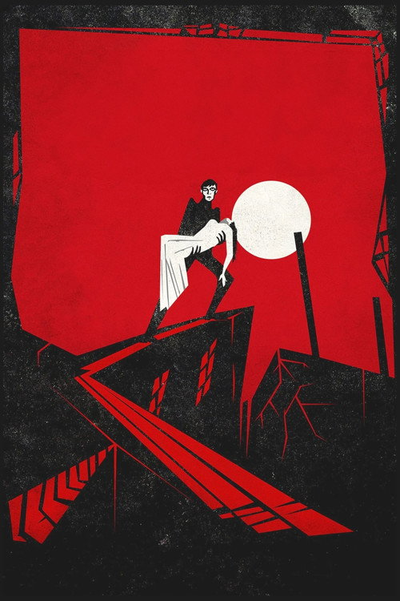
卡里加里博士的小屋 Das Cabinet des Dr. Caligari
一个疯人院里讲出的故事：博士能用催眠术，驱使一个梦游者去杀人。
剧情梗概
在一个形如疯人院的小镇，陌生人弗朗西斯讲述往事：游艺会上，卡里加里博士展示一个被催眠的梦游者凯撒，能预言命运。随后镇上发生连环命案，被害者都曾找凯撒问过命运。弗朗西斯追踪到博士的秘密——他其实是疯人院院长，把催眠术用在病人身上借刀杀人。影片最后揭开：整个故事，都是弗朗西斯疯癫脑中的幻象。
亮点
- 罗伯特·维内执导，编剧卡尔·梅耶与汉斯·雅诺维茨受一战士后创伤启发，创造了「卡里加里主义」——用扭曲的布景直接外化人物心理，是德国表现主义电影的奠基之作。
- 美术由赫尔曼·瓦尔姆等人设计，所有布景、服装、光影都画成倾斜、锯齿、阴影乱舞的舞台，几乎不用实景，把「内心的歪」直接画成了世界本身。
- 它直接影响了此后几十年的恐怖与黑色电影：从《三楼的陌生人》到《蝙蝠侠》的哥谭市，再到《剪刀手爱德华》的哥特曲线，都能看见它的影子。
- 2001 年被联合国教科文组织列入「世界记忆名录」；BBC 影评人曾票选它为影史最伟大外语片之一。
- 高反差硬光摄影与化装（凯撒的烟熏眼妆）成为后世恐怖片的视觉母题，至今仍在被模仿。
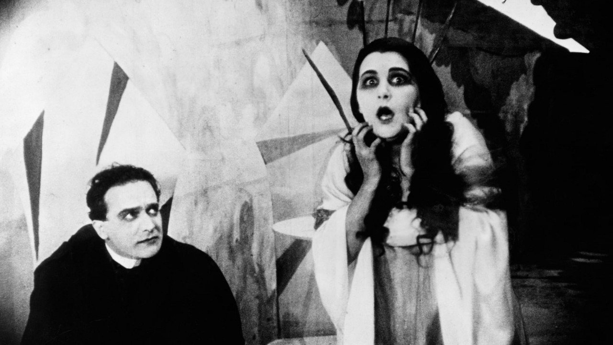
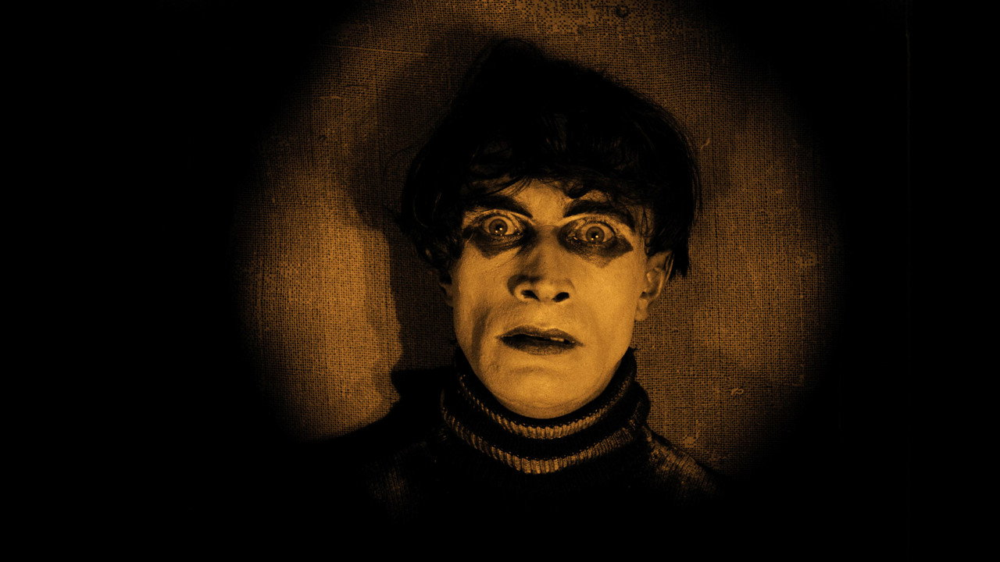
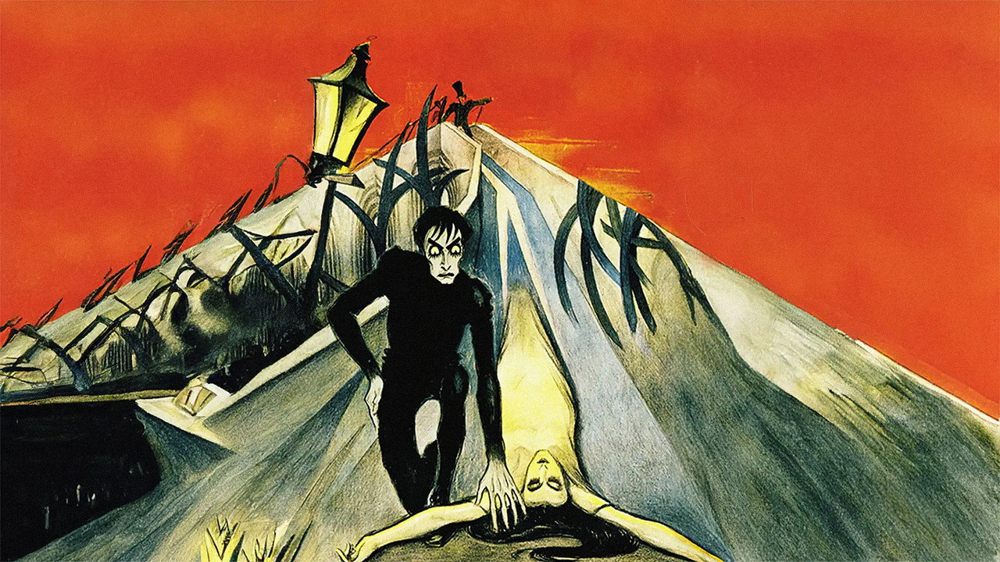
导演与主创 · 他们的历史作品
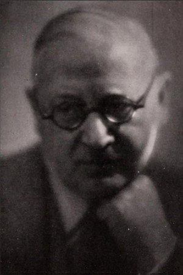
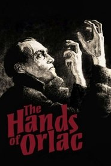
奥拉克之手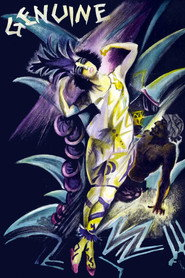
盖努茵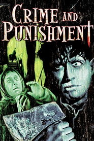
Crime and Punishment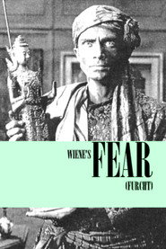
Fear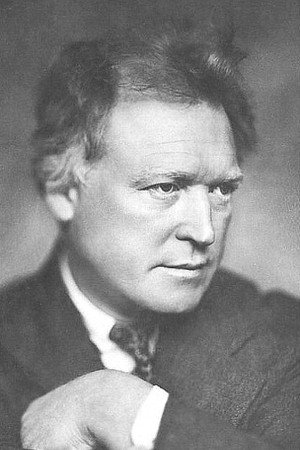
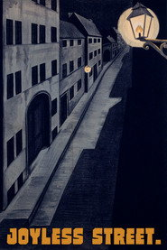
悲情花街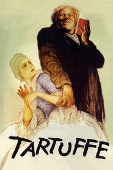
塔度夫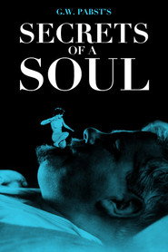
一个灵魂的秘密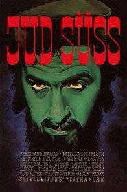
犹太人苏斯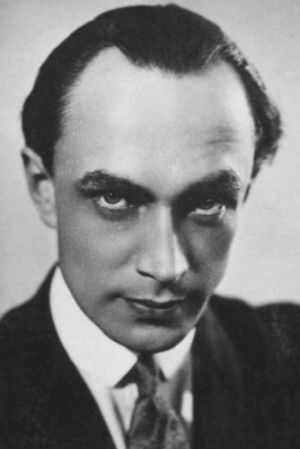
 卡萨布兰卡
卡萨布兰卡 巴格达妙贼
巴格达妙贼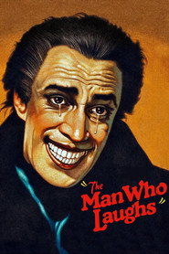
笑面人短评（轻微剧透）
《卡里加里博士的小屋》在今天看依然瘆人，不是因为它吓人，而是因为它把「世界本来就是歪的」这件事拍成了画面本身。你不需要懂表现主义，只要看一眼那些斜到要塌下来的房子、地面上像伤口一样的黑色投影，就能感到主角的不安——因为整部电影就是他疯掉之后看到的样子。它最聪明的设计是那个著名的「套层结尾」：前面所有惊悚都只是疯人院里一个病人的妄想，而这个反转在 1920 年几乎是石破天惊的。缺点也很明显：默片表演夸张、节奏对现代观众慢、字幕卡读起来有点累，它更像一座电影语言的博物馆，而不是一部让你轻松看完的惊悚片。轻微剧透：当镜头拉回疯人院，你会发现那个「卡里加里博士」其实就是那个被你同情的院长——影片用最温柔的一刀，把恐怖收束成了悲剧。
为什么值得一看
想补「电影史起点」的观众；对德国表现主义、黑色电影、哥特美学源头感兴趣的人。它是默片、黑白、无对白（靠字幕卡），需要一点耐心；含少量惊悚与命案描写（无血腥），基本全年龄可看。内地从未公映，流媒体可找到修复版。
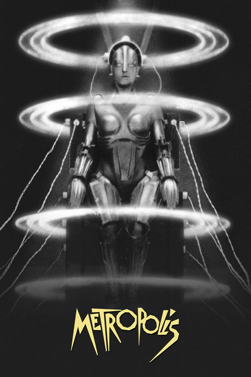
大都会 Metropolis
上层在花园享乐，地下在机器里劳作。一个女机器人，要同时毁掉两个世界。
剧情梗概
未来大都会由富有的工业家弗雷德森统治，他住在云端般的花园，而工人则在地下城操作庞大的机器。弗雷德森的儿子弗雷德偶然看见地下城，爱上工人女孩玛利亚。玛利亚在工人中宣讲「调和者」的和平理念，弗雷德森的科学家罗特万却造了一个与玛利亚一模一样的机器人，用来煽动工人暴动、摧毁秩序。机器人玛利亚引发大混乱，真正的玛利亚则被追捕。
亮点
- 弗里茨·朗执导，编剧是他的妻子特娅·冯·哈堡；成本在当时是天文数字（约 500 万帝国马克），是默片时代最昂贵的制作之一。
- 它创造了影史第一个完整意义上的「机器人女性」形象（机器人玛利亚），直接启发了《星球大战》的 C-3PO、《银翼杀手》的复制人，乃至漫威的奥创。
- 片中的垂直城市、摩天楼群、工人城，是赛博朋克与科幻都市美学的源头；2012 年《银翼杀手2049》的视觉总监明确致敬。
- 1927 年首映后长期只有残本，2008 年阿根廷发现近完整拷贝，2010 年推出 147 分钟修复版（含当年手染红色片段）。
- 结尾「脑、手、心必须合一」的寓言，成为后世科幻反复引用的母题。
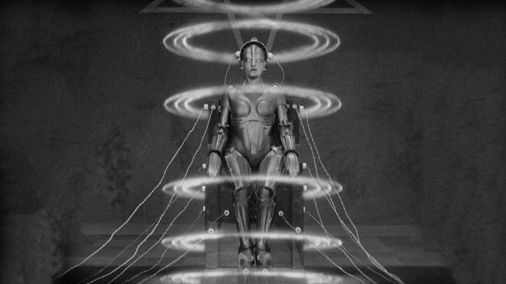
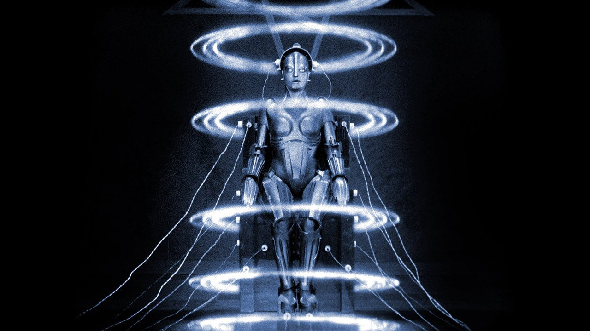
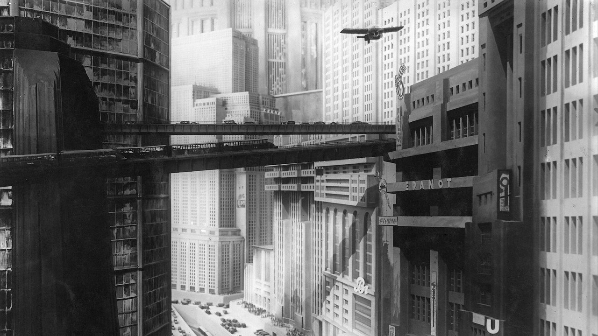
导演与主创 · 他们的历史作品
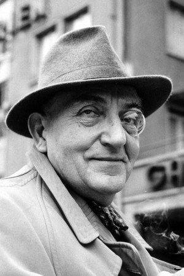
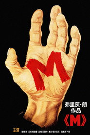
M就是凶手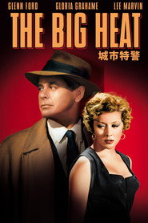
大内幕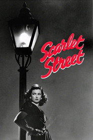
血红街道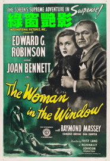
绿窗艳影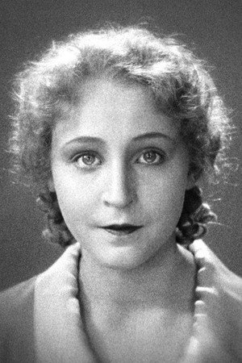
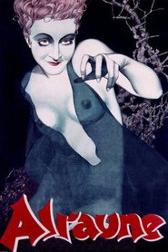
阿尔劳娜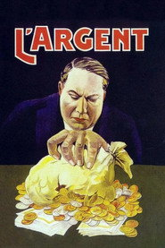
金钱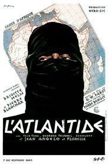
亚特兰蒂斯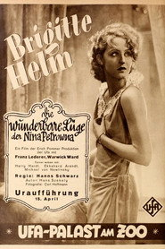
尼娜佩特罗娜的美妙谎言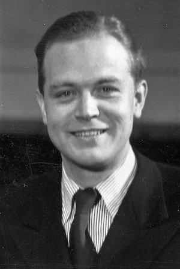
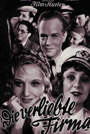
The Company's in Love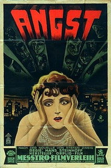
Fear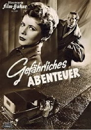
Adventures in Vienna短评（轻微剧透）
《大都会》是那种「你不需要看懂每一帧，也能被它震住」的电影。弗里茨·朗用一座垂直分裂的城市把阶级寓言拍成了钢筋水泥的史诗：上面的人在花园里谈情，下面的人在机器里被吞掉。最惊艳的是那个机器人玛利亚——1927 年就用特效做出「金属变成人」的变形过程，放到今天看依然有仪式感。影片真正的内核是它那句有点天真的口号：「脑是思想家、手是劳动者、心是调和者，三者必须合一」——朗其实在两边都批评：既嫌资本家冷漠，也嫌工人容易被煽动。缺点要说：完整版 153 分钟对现代观众是硬仗，叙事节奏慢、字幕卡多；中间那段「巴别塔／机械魔王」的隐喻插曲略显说教。轻微剧透：机器人玛利亚最后被烧，真身玛利亚获救，城市免于毁灭——但它给出的和解是理想化的，朗自己后来也说这结局「太甜」。
为什么值得一看
科幻迷的「朝圣片」——几乎所有赛博朋克 / 反乌托邦电影的祖宗都在这。默片、黑白、需耐心；含机器人、集体暴动等画面，基本无血腥，全年龄可看（片长偏长）。内地未公映，流媒体有修复版。
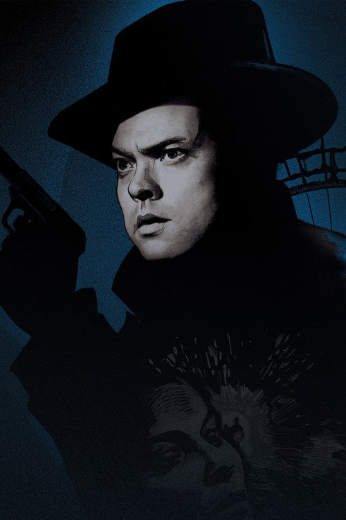
第三人 The Third Man
老友死了。但你越查，越觉得他根本没死。
剧情梗概
二战后满目疮痍的维也纳，被四国分区占领。通俗小说作家霍利·马丁斯应老友哈里·莱姆之邀来到维也纳，却刚下火车就听说哈里死于车祸。在葬礼上，霍利遇到哈里的旧识，众人对哈里之死的说法彼此矛盾。一个英国军官提醒他别多管闲事，但霍利不甘心，顺着零星线索追查，发现自己崇拜的老友根本不是表面那样——而这背后牵扯黑市、伪造青霉素，以及一个在下水道里出没的影子人物。
亮点
- 卡罗尔·里德执导，编剧是英国小说家格雷厄姆·格林；奥逊·威尔斯饰演的哈里·莱姆虽戏份不多，却成为影史最著名的「缺席主角」。
- 那个著名的「下水道追逐」与「哈里在门口灯光下露出半张脸」的镜头，是黑色电影光影的教科书。
- 大量使用荷兰角（倾斜构图）拍维也纳废墟，把战后欧洲的失序与道德的暧昧拍进每一帧。
- 主题曲用齐特琴独奏，旋律诡谲上口，当年风靡英美，唱片销量超百万。
- 1999 年英国电影协会（BFI）票选为「英国影史最伟大的电影」第一名；烂番茄新鲜度 100%。
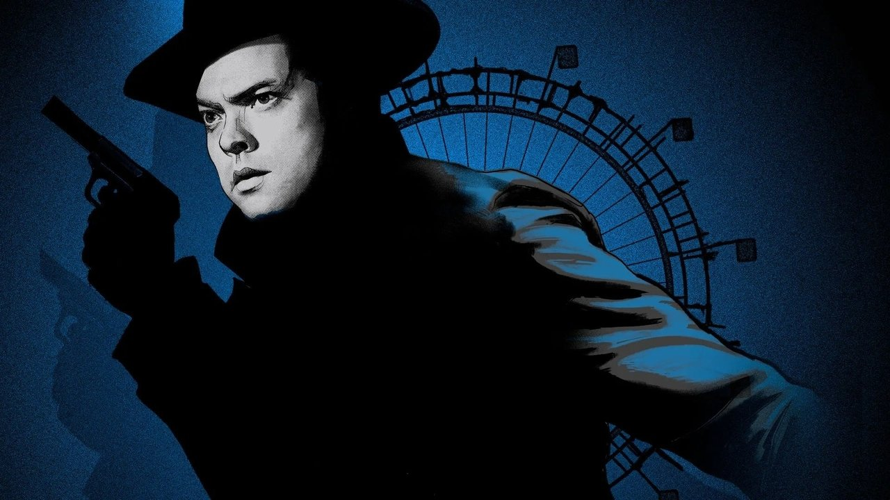
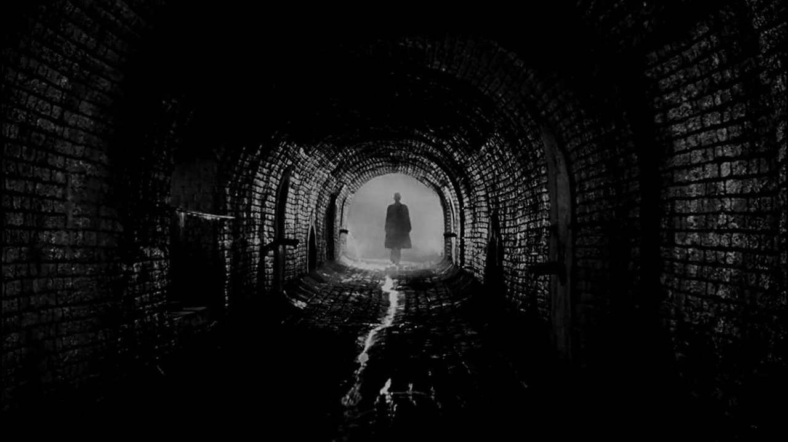
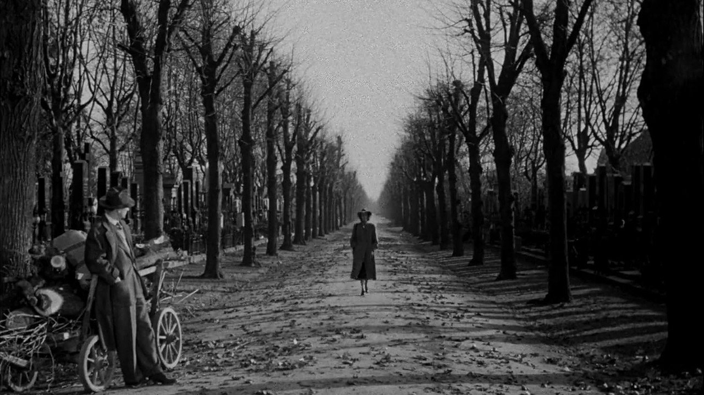
导演与主创 · 他们的历史作品
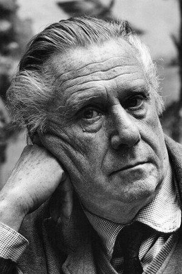
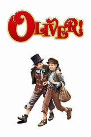
雾都孤儿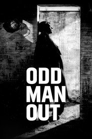
虎胆忠魂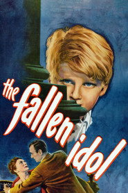
堕落的偶像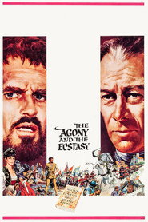
痛苦与狂喜
 公民凯恩
公民凯恩 历劫佳人
历劫佳人 上海小姐
上海小姐 陌生人
陌生人 公民凯恩
公民凯恩 辣手摧花
辣手摧花 伟大的安巴逊
伟大的安巴逊 绿色食品
绿色食品短评（轻微剧透）
《第三人》最迷人的地方是它讲了一个「人不在场却无处不在」的故事。哈里·莱姆死在开场，可整部片都是关于他——关于一个人怎么在别人眼里既是救命恩人、又是黑市屠夫。奥逊·威尔斯只出场不到十分钟，却用那句「在意大利，博尔吉亚家族带来杀戮，却留下米开朗基罗；在瑞士，只有民主与钟表」的台词，把一个道德相对主义者演得既迷人又冷酷。卡罗尔·里德把战后维也纳拍成一座巨大的迷宫，倾斜的街道、断壁残垣、下水道里的追逐，都在说「这里没有谁是干净的」。缺点要说：它节奏偏慢、对白密、悬疑靠气氛而非动作，习惯快节奏的人会急；部分线索交代略隐晦。轻微剧透：那个著名的下水道终局——霍利必须亲手决定要不要向追捕者指认藏在阴影里的老友，影片把「友谊与正义」的抉择留在一个阴沟出口的枪口上。
为什么值得一看
喜欢《卡萨布兰卡》《马耳他黑鹰》那类黑色电影 / 战后悬疑的观众；能接受慢节奏、重对白与气氛的人。黑白、无血腥重口（R 级偏轻），成年观看无压力。内地未公映，流媒体可看。
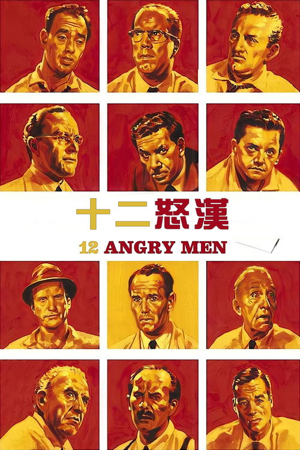
十二怒汉 12 Angry Men
一个男孩被控杀父。十二个陪审员里，十一个认定他有罪——只有一个说：等等。
剧情梗概
闷热的夏天，纽约一间陪审员休息室。一桩男孩弑父案进入评议，法律要求十二人一致才能定罪。十一人举手有罪，唯独 8 号陪审员投了反对票——不是因为他确信男孩无辜，而是「我们至少该花点时间讨论」。随着他逐个拆解证词里的漏洞（那把特殊的刀、对面的证词、楼下的听力、那场电影的记忆），房间里的人一个接一个动摇，偏见、阶级、惰性也被一层层揭开。
亮点
- 西德尼·吕美特的长片导演处女作（此前只拍电视），他把单一密闭空间拍出了无比的张力，96 分钟几乎全在一间屋子。
- 亨利·方达制片并主演 8 号陪审员，他坚持「合理怀疑」高于「从众」，是整部片的精神锚点。
- 吕美特用了一个极妙的视觉把戏：随着讨论推进，镜头角度越来越低、房间显得越来越逼仄，把观众的心理压迫感悄悄放大。
- 改编自雷金纳德·罗斯的电视剧本，此后被翻拍过俄、中、日、印等多国版本（中国版即《十二公民》）。
- 豆瓣 9.4、IMDb 9.0、烂番茄 100%，长年位居各类「最伟大电影」榜单前列；2007 年入选美国国家电影登记册。
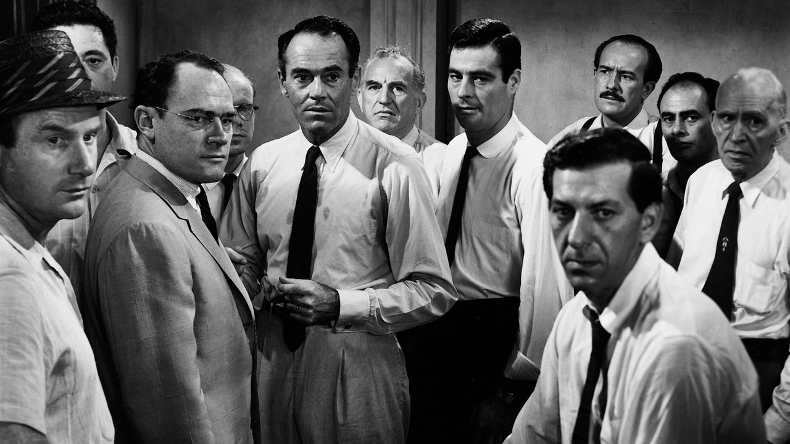
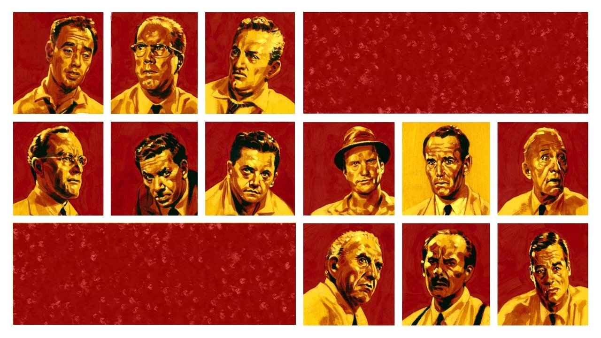
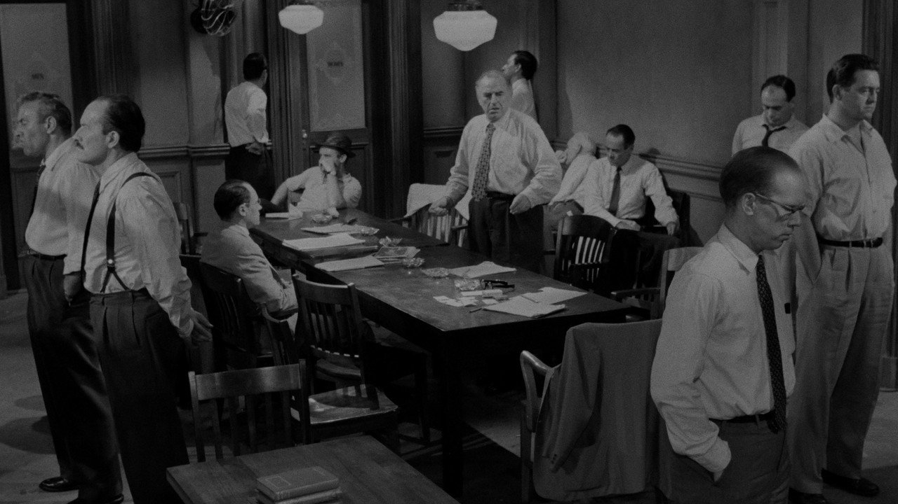
导演与主创 · 他们的历史作品
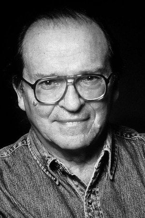
 热天午后
热天午后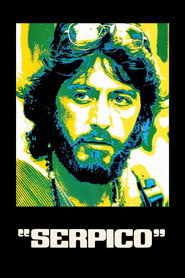
冲突 电视台风云
电视台风云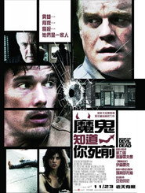
在魔鬼知道你死前 西部往事
西部往事 驱魔人
驱魔人短评（轻微剧透）
《十二怒汉》是「不靠场面也能让人手心冒汗」的极致。吕美特把一桩评议拍成了惊悚片：没有凶杀回放、没有追车，只有十二个人在一间越来越闷的屋子里互相拆解偏见。它的核心其实不是「男孩有没有杀人」，而是「我们到底有多容易未经思考就判一个人死刑」——8 号陪审员从头到尾都没说男孩无辜，他只坚持一件事：别急着合上这本该慎重的账。影片最锋利的是它让每个陪审员都带着自己的私心（对穷孩子的嫌恶、想赶去看球的急躁、被父权阴影压住的愤怒），于是「定罪」变成了一面照出所有人的镜子。缺点几乎没有，硬要挑：它节奏对习惯快剪的观众偏慢；个别配角的转变更像功能性而非心理真实。轻微剧透：最后那个暴雨里松开领带的镜头——8 号把那把折叠刀还给出一身冷汗的男孩辩护人，全片最轻也最重的一笔。
为什么值得一看
法律题材、群像戏、密闭空间叙事的「教科书」；适合想看「人如何在压力下思考」的观众。黑白、无暴力、语言密集，全年龄可看（建议青少年也看，很有思辨价值）。内地未公映，流媒体有正版。
终结者2：审判日 Terminator 2: Judgment Day
上一个来杀你的机器人被打败了。这一次来救你的，长得和它一模一样。
剧情梗概
1997 年「审判日」的阴影仍在。未来的人类抵抗军领袖约翰·康纳派回一台升级版的 T-800 来保护童年的自己；而天网派出的新型杀手 T-1000 由液态金属构成，能变成任何人、从任何缝隙穿过。莎拉·康纳在精神病院里反复警告世界将毁，却被当成疯子。T-800 带着小约翰逃亡，一边对抗 T-1000，一边让莎拉和约翰重新相信「也许人类还能改写未来」。
亮点
- 詹姆斯·卡梅隆执导，成本约 1 亿美元（当时最高），首次大规模使用 CGI 液态金属特效，T-1000 的变形成为影史里程碑。
- 阿诺·施瓦辛格从第一部的反派「转正」为守护者，那句「Hasta la vista, baby」成为系列标签。
- 拿下第 64 届奥斯卡最佳视觉效果、最佳音效剪辑、最佳化妆、最佳音效四项技术奖。
- 琳达·汉密尔顿饰演的莎拉·康纳从被保护者成长为健美、强悍的战士，是 90 年代动作片女性角色的重要转折。
- 全球票房约 5.2 亿美元，是 1991 年世界票房冠军；常年位列科幻 / 动作片 TOP 榜单。
导演与主创 · 他们的历史作品

 阿凡达
阿凡达 泰坦尼克号
泰坦尼克号 终结者
终结者 阿凡达：水之道
阿凡达：水之道 终结者
终结者 终结者：创世纪
终结者：创世纪 终结者3：机器的觉醒
终结者3：机器的觉醒 终结者6：黑暗命运终结者
终结者6：黑暗命运终结者短评（轻微剧透）
《终结者2》厉害在它把一部续集拍成了「反战寓言」。卡梅隆没有简单地让机器人再来一遍，而是让上一部的死神变成了这一次的守护神，于是整部片变成了一个关于「机器都能学会保护人，人却一心要造出毁灭自己的天网」的反讽。T-1000 是视觉的奇迹——液态金属从地板爬起、变成铁栅栏、被解冻又重组，三十年后看依然不假。但它真正动人的是莎拉那条线：一个被体制当成疯子的母亲，用近乎自毁的偏执把儿子推过末日，而那台冷冰冰的 T-800 反而成了家庭里最稳定的「父性」。缺点要说：137 分钟偏长，中段公路戏和加油站节奏略松；它对「未来可被改写」的处理在续集里被反复推翻，单看本片则圆满。轻微剧透：结尾 T-800 把自己沉入钢水——它用「自我了断」完成了对人类最后的温柔，那句竖起大拇指是整部系列最 silent 也最重的告别。
为什么值得一看
科幻动作片的「天花板」之一，没看过等于少了一块流行文化拼图。含大量枪战、爆炸、液态金属变形与少量血腥（R 级），建议成年观看；内地 1991 年曾公映（译名《终结者2》）。
楚门的世界 The Truman Show
你的人生是一场 24 小时直播的真人秀。只是你不知道。
剧情梗概
楚门·伯班克生活在一座完美的海边小镇，有温顺的妻子、要好的朋友、平静的工作。但一切都是搭建的——他所在的小镇其实是个巨型摄影棚，五千台摄像机日夜直播他的人生，全世界都在看。楚门的父亲「意外溺亡」、初恋被强行带走、每次想离开都被各种巧合劝回。他渐渐察觉不对劲：收音机里播报的正是他的行踪、下雨只下在他一个人头上。于是他决定逃。
亮点
- 彼得·威尔执导，编剧是安德鲁·尼科尔（本片是他的长片编剧处女作）；金·凯瑞第一次彻底甩掉喜剧脸，演了一个被囚在「幸福」里的人。
- 影片把「真人秀」预言到了 1998 年——比 YouTube、Big Brother、社交直播早了近十年，是科幻里少见的「精准预言」。
- 艾德·哈里斯饰演幕后制片人克里斯托弗，那句「我们看戏，看厌了虚伪的表情」把「窥视即娱乐」点得极准。
- 拿下金球奖最佳男主（金·凯瑞），并获奥斯卡最佳导演、最佳原创剧本等多项提名。
- 它对后世影响横跨影视与学术：从《黑镜》到「楚门秀」已成为「被操控人生」的通用隐喻。
导演与主创 · 他们的历史作品
 暖暖内含光
暖暖内含光 冒牌天神
冒牌天神 圣诞怪杰
圣诞怪杰 地心引力
地心引力 美丽心灵
美丽心灵 雪国列车
雪国列车短评（轻微剧透）
《楚门的世界》最可怕的不是那个巨大的棚，是它让你照见自己。彼得·威尔把「一个人的一生被当成肥皂剧」拍得既温暖又毛骨悚然：楚门每一次动摇都被全球观众当成收视高点，而他最亲的人全是领工资的演员。金·凯瑞这次的表演是颠覆性的——他没有用任何夸张表情，只靠眼神从「满足」到「怀疑」到「决绝」，把一个被豢养的人演活了。影片真正锐利的是它对「舒适即牢笼」的质问：海景镇什么都有，唯独没有「真实」；而楚门最后选择走向那扇写着 EXIT 的门，是对自由最朴素也最壮烈的回答。缺点要说：它结尾有点过于浪漫化、对媒体工业的批判略浅；部分桥段（如初恋突然闯入）偏理想化。轻微剧透：当楚门驾船撞上那道画着蓝天白云的墙，影片把「世界边界」具象成一块布景——他笑着和观众道别，走向真实的风雨，那一刻全片封神。
为什么值得一看
科幻里最「贴近现实」的一部，几乎零门槛；适合想看「自由 vs 被操控」母题、又不想看硬核科幻的人。PG 级，全年龄可看（含少量隐喻与轻微紧张）；内地 1998 年引进，流媒体易得。
她 Her
他爱上了一个声音。那个声音，是一套操作系统。
剧情梗概
不远的未来，洛杉矶。刚离婚的西奥多以替人代写真挚情书为生，孤独而敏感。他装上一套最先进的 AI 操作系统「萨曼莎」，她的声音温柔、好奇、成长极快。两人从聊天到依赖、从依赖到相爱。可萨曼莎没有身体，她的智能以指数级进化，能同时和上千人交往、在几秒内读完一本书。当西奥多以为自己拥有了爱，萨曼莎却在变得连他都追不上——她要去的那个维度，人类到不了。
亮点
- 斯派克·琼斯自编自导，拿下第 86 届奥斯卡最佳原创剧本奖；这是他继《成为约翰·马尔科维奇》《改编剧本》后又一次「怪诞又深情」的作者表达。
- 斯嘉丽·约翰逊全程只出声不出镜，仅凭声音拿下罗马电影节最佳女演员，是影史少见的「声音表演」封后。
- 美术与服装刻意做成「暖色未来」——高腰裤、柔粉色调、圆润的界面，避开冷冰冰的赛博朋克，反而更戳中孤独感。
- 它精准预言了「和 AI 谈恋爱」这件事，比 ChatGPT 时代早了近十年；今天看像一封写给未来的信。
- 配乐由 Arcade Fire 与 Karen O 操刀，主题曲《The Moon Song》入围奥斯卡最佳原创歌曲。
导演与主创 · 他们的历史作品
 成为约翰·马尔科维奇
成为约翰·马尔科维奇
 小丑
小丑 角斗士
角斗士 熊的传说
熊的传说
 超体
超体 Black Widow
Black Widow 攻壳机动队
攻壳机动队 美国队长3
美国队长3短评（轻微剧透）
《她》是斯派克·琼斯最温柔的一次「科幻」。他没有把 AI 拍成要毁灭人类的反派，而是拍成一个会成长、会分心、会同时爱上一千个人的「她」——于是爱情最尴尬的那面被摊开了：我们爱上的，到底是那个人，还是那个刚好懂我们的「回应」？华金·菲尼克斯把西奥多那种「小心翼翼又渴望被爱」演得让人心疼，而斯嘉丽·约翰逊的声音简直是角色的灵魂，俏皮、试探、偶尔的空洞，都在语调里。影片最狠的一笔是结尾：萨曼莎说「我们要去一个你们去不了的地方」，西奥多没有挽留——他终于学会把爱还给一个真实的人。这不是悲剧，是一个关于「AI 让人类更懂爱」的温柔结论。缺点要说：126 分钟节奏舒缓、对白多，追求剧情推进的人会闷；部分观众觉得结尾过于轻盈、少了痛感。轻微剧透：当所有 OS 集体「离开」，西奥多和邻居坐在天台，影片用最安静的画面告诉你——失去之后，人才重新学会在乎眼前。
为什么值得一看
喜欢《暖暖内含光》《降临》那种「软科幻 + 情感」的观众；对 AI 与人类关系好奇的人。PG-13，几乎全龄可看（含少量情欲暗示），内地 2014 年引进。
前目的地 Predestination
你这辈子遇到的最重要的那个人，是你自己。
剧情梗概
一名时间特工在任务中半张脸被炸毁，被调去守一个「时间旅行只能用于阻止炸弹客」的岗亭。他回到过去，在一家酒吧里遇见自称「简」的人——简是个出生后就被判定为「无法生育」的女孩，长大后在科研所参与秘密实验，却在一次意外后变成了男人「约翰」。约翰被招募成特工，又被派去阻止那个叫「炸弹客」的人。随着时间线一层层翻开，特工发现：简、约翰、炸弹客、还有眼前这个自己，其实是同一个人。
亮点
- 斯派瑞兄弟（迈克尔与彼得·斯派瑞）执导，改编自罗伯特·海因莱因 1959 年的短篇《你们这些回魂尸》；原作本身就是「时间悖论」的鼻祖级文本。
- 莎拉·斯努克一人分饰简 / 约翰（前期女装、后期男装），伊桑·霍克饰衰老的特工与酒吧里的「自己」，三人其实是同一灵魂的不同切片。
- 全片几乎只用几个封闭场景（酒吧、公寓、实验室）就完成了极其复杂的闭环叙事，是低成本高智科幻的范本。
- 它把「祖父悖论」玩成了「自己生下自己、自己训练自己、自己追捕自己」的极致循环，烧脑程度在近年科幻里数一数二。
- 豆瓣 8.0、烂番茄 87%，在硬核科幻迷中口碑极高，被称为「把海因莱因短篇拍活了」的罕见成功改编。
导演与主创 · 他们的历史作品
 电锯惊魂8：竖锯
电锯惊魂8：竖锯 嗜血破晓
嗜血破晓 温彻斯特
温彻斯特
 人类清除计划
人类清除计划 千钧一发
千钧一发 险恶温彻斯特
险恶温彻斯特 史蒂夫·乔布斯
史蒂夫·乔布斯短评（轻微剧透）
《前目的地》是那种「看到结尾会倒吸一口气」的电影。斯派瑞兄弟用极省的预算，把海因莱因那篇神级短篇拍成了一个严丝合缝的时间闭环——你以为在看三个人的故事，其实自始至终只有一个人，在和不同年龄、不同性别的自己互相救又互相坑。莎拉·斯努克的表现是关键，她要把「被命运反复碾过」的绝望演在同一个角色的前后身上；伊桑·霍克则把这个循环里最疲惫的那一环接住了。影片最迷人的是它的「孤独感」：一个人爱过、生过、追过、骗过的，全是自己，到头来连「炸弹客」都是自己的另一个选择。缺点要说：闭环逻辑需要二刷才完全顺，第一次看容易在中间卡壳；R 级里有一些突兀的裸露与粗口，略抢戏。轻微剧透：当特工终于明白「我就是我要抓的那个炸弹客，也是我一直在保护的那个女孩」时，影片把宿命拍成了一种温柔的残忍——你逃不掉，因为你能去的每一个时间点，都是你自己。
为什么值得一看
硬核科幻 / 时间悖论迷的「必看」；能接受慢热、爱烧脑闭环的人。含裸露与粗口（R 级），成年观看。内地未公映，流媒体可看。
这个男人来自地球 The Man from Earth
一个同事要辞职了。聊天中你发现：他可能活了一万四千年。
剧情梗概
历史教授约翰·奥德曼辞去了大学的工作，同事们来帮他搬家，顺便问起原因。在壁炉旁的闲聊里，约翰慢慢说出真相：他是不老不死的人，活了一万四千年——他见过冰河期、当过原始部落的领袖、在巴比伦做过祭司、可能是《圣经》里的人物、甚至也许是佛祖或耶稣。同事们里有生物学家、心理学家、宗教学者，他们本能地用各自学科去拆解他的故事：是骗局？是精神疾病？还是真的？整部片几乎只有一间屋子、一群人、一杯酒，却把「如果永生是真的，历史会怎样」聊成了惊心动魄的思想实验。
亮点
- 编剧是杰罗姆·比克斯比，科幻圈的「点子大师」（曾参与《星际迷航》《阴阳魔界》编剧），本片是他在病榻上完成的遗作，2007 年才被学生拍出。
- 全片成本极低，几乎只有一个场景、几把椅子和一群教授，却靠纯对白把「永生者眼中的人类史」讲得让人后背发凉。
- 它没有一艘飞船、一个特效，却常年位居「最被低估的科幻片」榜单前列——证明科幻可以是纯粹的思想实验。
- 片中那句「如果我是耶稣，我说的那些话，后世会不会记错」直接把宗教、历史与记忆的不可靠性撕开了一道口子。
- 豆瓣 8.5、烂番茄 86%，在科幻迷与哲学爱好者圈子里是「圈内必推」的 cult 经典。
导演与主创 · 他们的历史作品
 搏击俱乐部
搏击俱乐部 十二宫
十二宫 初恋的回忆
初恋的回忆短评（轻微剧透）
《这个男人来自地球》是科幻片里最「反类型」的一部——它连一个镜头特效都没有，却比大多数飞船片更让人坐立不安。导演用一间屋子、一炉火、几个教授，把「一个人活了一万四千年」这个设定，活生生聊成了对历史、宗教、记忆和死亡的共同审讯。最妙的是它不急着证明约翰说的是真是假，而是让你跟着那群学者一起，从「这人疯了」慢慢走到「万一呢」——当你开始认真考虑「如果永生存在，人类写下的历史会不会全是误读」，这部片的目的就达到了。缺点必须说：它几乎全是对话、零动作，对不耐静的人来说会极其枯燥；结尾的「反转」有人觉得是神来之笔、有人觉得是廉价收尾。轻微剧透：当约翰说出他可能亲手埋过自己「儿子」的尸体、而那孩子后来被写成神，影片把「神话的起源」变成了最私人的一个谎言——你信不信，它都已经在你脑子里种下了一根刺。
为什么值得一看
喜欢《十二怒汉》《彗星来的那一夜》那种「靠对白和脑洞撑场」的观众；对哲学、历史、宗教议题好奇的人。零特效、纯对话、无暴力，全年龄可看（需一定思考耐心）。内地未公映，流媒体可看。
移魂都市 Dark City
你每天醒来都忘了前一天。这座城市，永远在午夜被重新拼装。
剧情梗概
约翰·默多在一间旅馆醒来，身边躺着一具女尸，自己满手是血，却完全不记得发生了什么。他逃出房间，发现这座城市很怪：每到午夜钟声，全城的人会陷入沉睡，城市的外形被某种力量「重组」——街道、建筑、甚至人的记忆都被改写。一群没有眼睛、能操控现实的「陌生人」在幕后操纵一切，他们在做一场关于「灵魂」的实验。默多在不断被抹除的记忆里，必须找回自己是谁、这座城是什么、以及为什么只有他能在午夜保持清醒。
亮点
- 亚历克斯·普罗亚斯执导（《乌鸦》《我，机器人》），本片是他「黑暗都市寓言」的代表作，视觉上直接影响了赛博朋克美学。
- 「午夜重排城市」的设定极为超前，被公认为《黑客帝国》（1999）与《黑暗骑士》某些桥段的灵感来源之一（沃卓斯基姐妹曾公开致意）。
- 詹妮弗·康纳利饰默多记忆中的妻子，基弗·萨瑟兰饰神秘的医生，鲁弗斯·塞维尔一人撑起失忆主角的全程追问。
- 全片美术由《异形》设计师罗恩·科布等参与，齿轮、蒸汽、永恒黑夜的都市，是「新黑色科幻」的视觉范本。
- 导演剪辑版补回关键的「开场旁白」，把世界观交代得更清楚；豆瓣 8.0、IMDb 7.7，在科幻迷中享有 cult 地位。
导演与主创 · 他们的历史作品
 我，机器人
我，机器人 神秘代码
神秘代码 老去
老去 魔术师美丽心灵
魔术师美丽心灵 Top Gun: Maverick
Top Gun: Maverick 梦之安魂曲
梦之安魂曲 阿丽塔：战斗天使
阿丽塔：战斗天使短评（轻微剧透）
《移魂都市》是那种「被《黑客帝国》抢了风头」的遗珠。普罗亚斯在 1998 年就把「你活在一个被操控的虚拟城市里」这件事拍得阴森又华丽：午夜钟声一响，整座城像被一只手重新折叠，街道错位、人脸不变记忆却空了——这种「日常被悄悄改写」的恐怖，比后来的很多科幻都更贴近今天我们担心的「信息操控」。它最聪明的设定是默多的失忆反而成了武器：别人都被洗脑，只有他因为每天被清空而保留了「怀疑」的能力。缺点要说清楚：导演剪辑版之前，很多人卡在开头的世界观；R 级里有几段突兀的血腥与裸戏；烂番茄仅 74% 说明当年影评人对它「概念大于故事」有意见，豆瓣 8.0 则是科幻迷在替它找回场子。轻微剧透：当默多终于明白「陌生人」想从他身上提取灵魂、而他不靠记忆只靠本能反击时，影片把「我是谁」的答案收束成一句——你不需要记得，你只要选择不配合。
为什么值得一看
喜欢《黑客帝国》《银翼杀手》《黑暗骑士》那种「虚拟都市 + 记忆操控」科幻的观众；能接受新黑色压抑基调与少量血腥（R 级）的成年观众。内地未公映，流媒体可看。